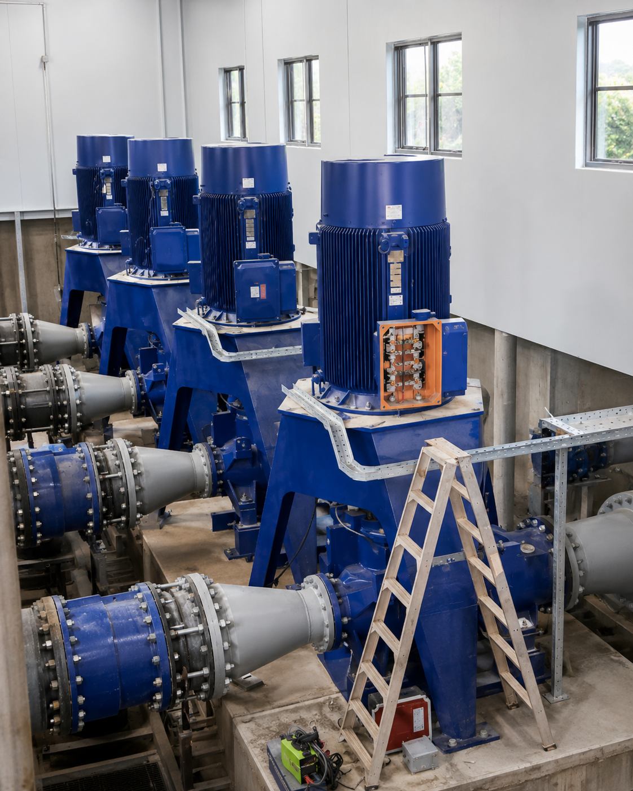

June 2024 - August 2024June 2024 - August 2024
Assistant Engineering Trainee
Zhongnan SZSG JH Joint Venture Company
Ambathale Water Treatment Plant Project
Gained hands-on exposure to water treatment plant operations, pump house systems, SCADA-based monitoring, instrumentation, motor systems, relay operations, control panels, VFD fundamentals, and HSE practices.
Main Exposure
- Pump house operations and system monitoring.
- SCADA-based monitoring and log keeping.
- Flow, pressure, and remote monitoring.
- Pump vibration and cooling water checks.
Technical Areas
- Pressure and differential pressure transmitters.
- Ultrasonic level transmitters and Prosonic sensors.
- AUMA actuators and relay operations.
- Motor troubleshooting and VFD fundamentals.